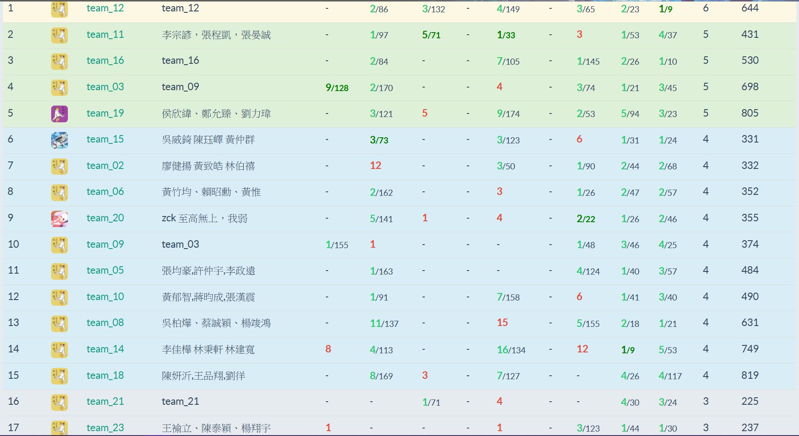

2021IOIC-Day3
今天上字串和dp，字串頗難，dp感覺能學到不少東西。
課程
早上
字串演算法OAO，之前一直沒有很想學字串演算法，畢竟IOI不會遇到。
這次把KMP給搞懂了，學會了Z，還學會了AC自動機。
超級神奇，感覺真的砸了就會AC，不過模板也是之後再練習。
boook在開場就說他是他們隊伍(LYB)負責雜耍的。
可是目前還對AC自動機能幹嘛沒很有概念@@。
下午
下午是dp OAO，一開始先從費式數列之類的開始講。
真正開始有趣的是優化的時候，講了斜率優化、分治優化、四邊形優化和aliens trck。
節奏蠻棒的，基礎和進階各半。
雖然明明還有很多dp可以講@@，他應該是想把四種優化好好講完。
從以前就很想搞懂四邊形優化，這次主要知道了大致上，可是還有不少沒想通的。
東東說他是今年的ioi銀牌，但她忘記現在已經2021了(
上機練習
今天是團體賽OAO。
我們沒有擬定什麼策略，反正就是到處看題目。
看記分板似乎水題都在後面兩題。
dijkstra還吃了兩個wa，心態差點爛掉@@。
把最後兩題寫完之後就不知道幹嘛了，開始燒雞。
但是我隊友對一題很有fu，雖然我覺得他是假解，所以我就想讓他自己搞。
後來她吃了TLE，我就繼續弄這題看來可做的題目。結果fhvirus覺得他的很合理，修了一下bug居然就AC了，我超愧疚ˊˋ。
之後有一題set一直re，後來都還沒修過。
這場也是燒雞，連燒兩天心態其實有點差。

住宿
今天去跟chyen買消夜吃，趕在晚點名前回來，我也不敢隨便違反規定(#
之後去到nathan的房間玩，那邊有六個人，超嗨。
nathanlee一直在debug。
現在才知道animax還是有上一些好看的(例如輝夜姬，雖然是第一季)。
後來弄到兩點多才睡覺，希望隔天不會睡太慘。